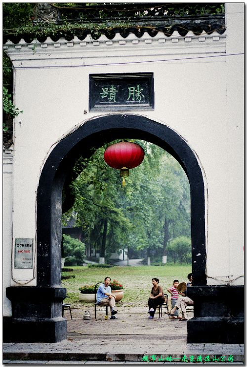
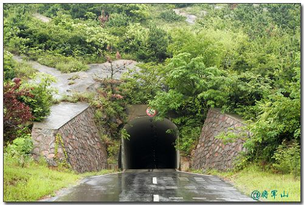
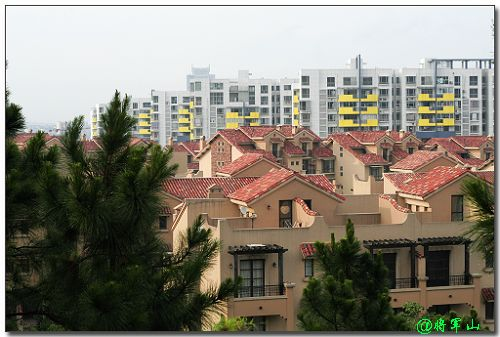
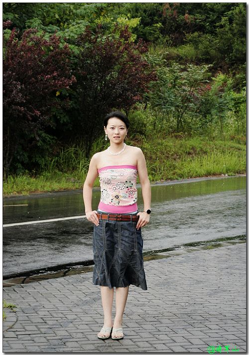
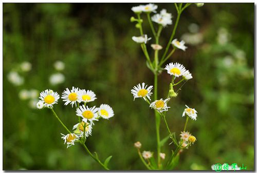

清凉周末 @ Jul 02, 2007
傍晚，清凉山公园内外。

通过一个狭长的山间隧道进入将军山。

将军山山根周围密密麻麻依山建了许多住宅，不好的天气从山顶上看那些灰色的别墅有点古墓的景象。挖土机还在山根下不停地挖掘着，展露出一大片泥土，象是将军山“新鲜的伤疤”。将军山附近的房价卖到5500~6800元，依山傍水，风水里意指“招财进宝”，按照这个说法那些住在山区里的山民岂不个个是财主了么？。我没什么宗教信仰，更不相信风水，当然，如果感觉不好一定会避免进那样的住宅。看过一部片子，大致讲宗教组织的黑暗面，回家找了名字介绍一下。

周末清凉装，引来许多少见多怪的眼神，其中包括我妈妈。我妈妈说：“你穿这么少，晚上一个人开车，我很担心啊。”晕！

山路边的小花~

17 Responses to “清凉周末”
2007-07-02
不少
2007-07-02
是有点露呀,还是去酒吧这样穿比较适合
2007-07-02
是冷还是其他原因,怎么出了个POSE,虽然皮肤可以但感觉总有些别扭
2007-07-02
粉红色很适合．
2007-07-02
穿清凉装夜晚一人开车，可比穿清凉装夜晚一人走路安全很多了哦．呵呵
2007-07-02
将军山风景区这条路边上的农家菜不错。
2007-07-02
想念将军山山顶的那晚。。。
2007-07-02
jiajialing Says:
2007-07-02
想念将军山山顶的那晚。。。
觉得很暧昧的一句话。。。
2007-07-03
那是去年夏天的夜晚，一年多不见的jiajialing从澳洲回南京，Sherry,jiajialing和我吃了点东西开车去将军山感受夜晚山顶的景色，
一件事，不同内心的人看出不同的“感想”。即使你是和一群人的夜晚，也可以被“感想”成某两个人的暧昧。：）主观判断是否等同于强迫症？亦或是以自己的言行来揣摩他人内心？亦或是刘姥姥心理？
对他人主观指点、评判的同时，是否考虑到自己是否是“自以为是的无知”？
2007-07-03
能和三五好友，穿山越领，畅所欲言，不亦快哉！Christina的明星气质都可以走红地毯拉：）
2007-07-03
皮肤越来越白了么。。。
2007-07-03
感觉变高挑了，肤色确实映衬得很好
2007-07-04
不爱穿高跟鞋，皮肤本来就不黑。
2007-07-06
hoho，又见清凉山。
两年多前的年底，就是在搜索“清凉山”时初次拜访“中国茶”
第一次约MM出来，紧张的到处搜集资料，甚至还提前跑去踩点，哈哈。
两年多啦，再也没去过，虽然就在家门口~
2007-07-09
单看身上每样东西都很好，但是搭在一起，总感觉有点别扭。。
我记得那个夜晚是我开着你的车上山的，我紧张的手心冒汗。你比我更紧张，边吆喝，边手舞足蹈的指挥着我。进隧道前，我们小心翼翼对着两边的车距，缓慢的钻了进去。。那情景让我想起“千与千寻”里那条分隔两个世界的狭长隧道，不知隧道的那一头会通往如何奇妙的世界。如果我们在那里迷失自我，不知道会不会变成两只大母猪，哈哈哈
2007-07-09
我倒~~变成精灵也好呀，变母猪多煞风景，哈哈哈哈...
2007-07-09
我倒，楼上的两位“....”
Leave A Reply
存档只读，评论已关闭。